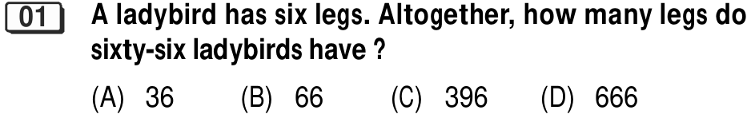
A ladybird has six legs. Altogether, how many legs do sixty-six ladybirds have ?
36
66
396
666
(C) No. of legs to a ladybird = 6
No. of legs to 66 ladybirds = ? 66 × 6 = 396 legs
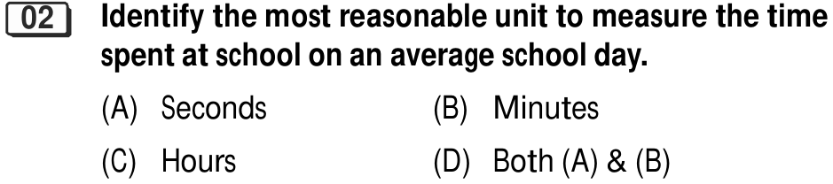
Identify the most reasonable unit to measure the time spent at school on an average school day.
Seconds
Minutes
Hours
Both (A) & (B)
(C) The unit of time that we spent at school
is hours
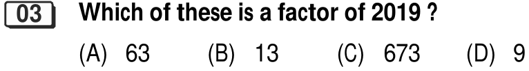
Which of these is a factor of 2019 ?
63
13
673
9
(C) From the given options 673 is a factor of
2019
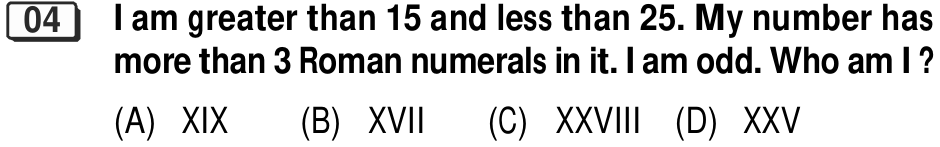
I am greater than 15 and less than 25. My number has more than 3 Roman numerals in it. I am odd. Who am I ?
XIX
XVII
XXVIII
XXV
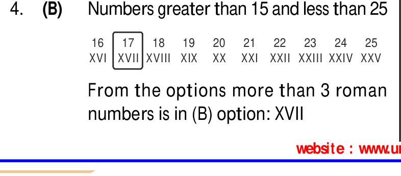
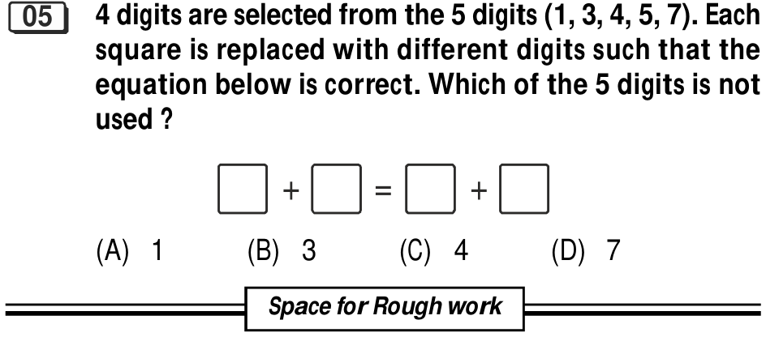
4 digits are selected from the 5 digits (1, 3, 4, 5, 7). Each square is replaced with different digits such that the equation below is correct. Which of the 5 digits is not used ?
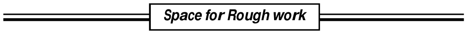
1
3
4
7
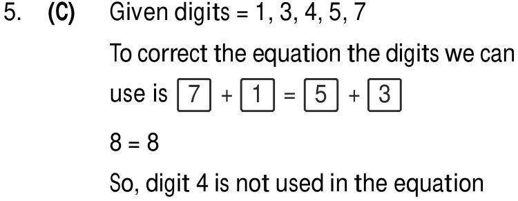
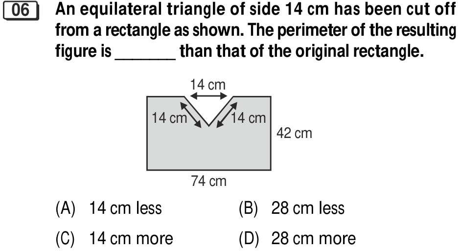
An equilateral triangle of side 14 cm has been cut off from a rectangle as shown. The perimeter of the resulting figure is _______ than that of the original rectangle.
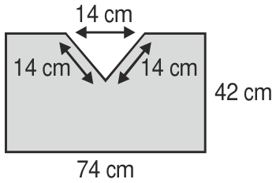
14 cm less
28 cm less
14 cm more
28 cm more
(C) Perimeter of the required figure
14 × 2 – 14
= 28 – 14
= 14 more
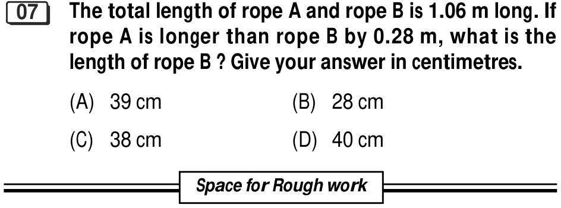
The total length of rope A and rope B is 1.06 m long. If rope A is longer than rope B by 0.28 m, what is the length of rope B ? Give your answer in centimetres.
39 cm
28 cm
38 cm
40 cm
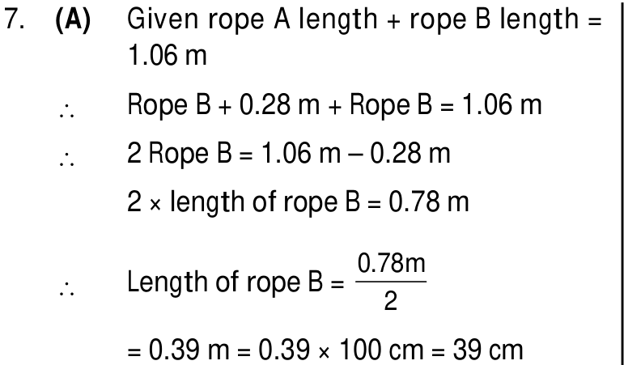
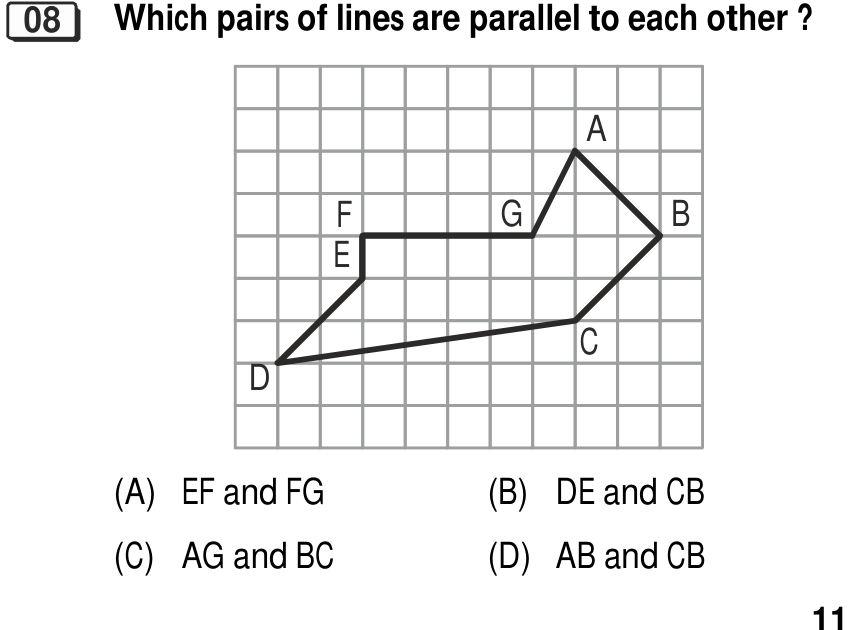
Which pairs of lines are parallel to each other ?
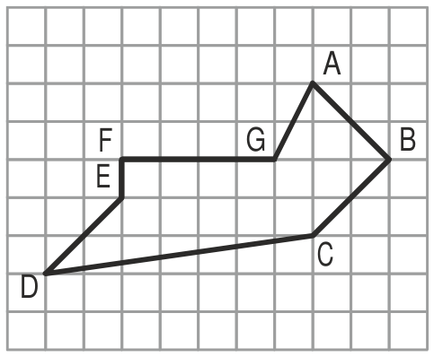
EF and FG
DE and CB
AG and BC
AB and CB
(B) DE and CB are parallel
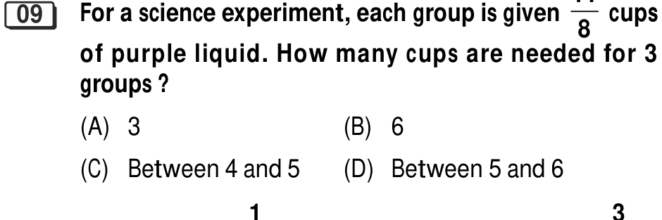
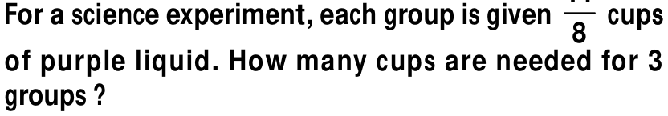
3
6
Between 4 and 5
Between 5 and 6
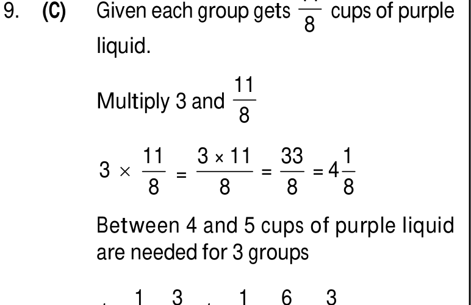
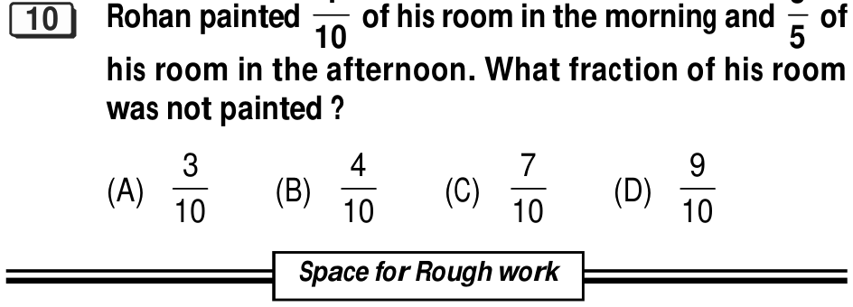
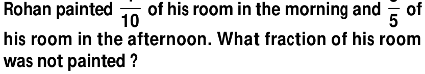
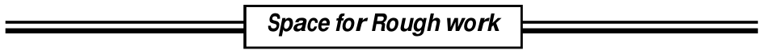
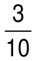
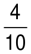
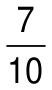
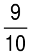
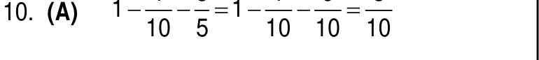
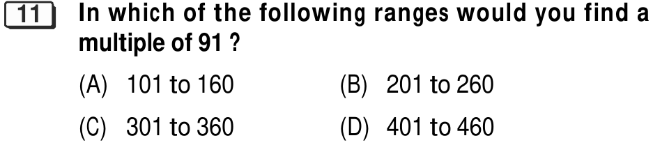
In which of the following ranges would you find a multiple of 91 ?
101 to 160
201 to 260
301 to 360
401 to 460
The first multiple of 91 are: 91, 182, 273, 364, 455 – the last of these is the first to be found in the ranges given.
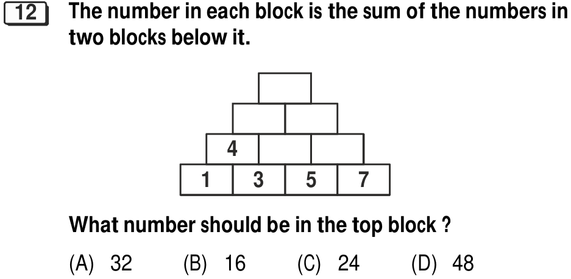
The number in each block is the sum of the numbers in two blocks below it.
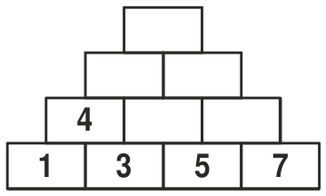
What number should be in the top block ?
32
16
24
48
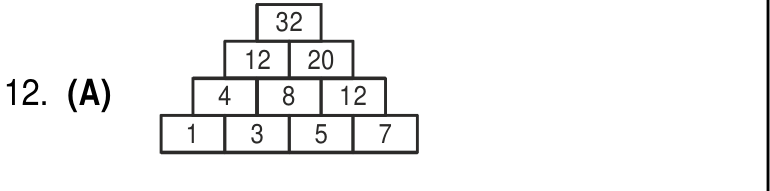
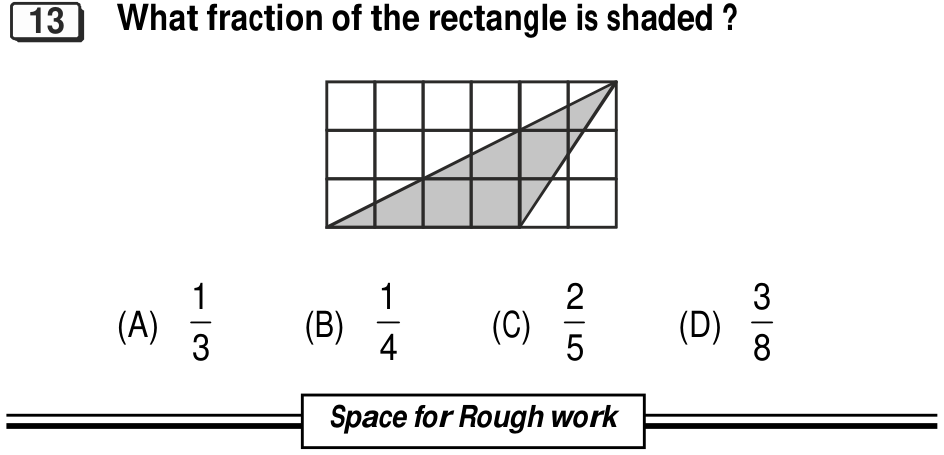
What fraction of the rectangle is shaded ?
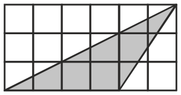
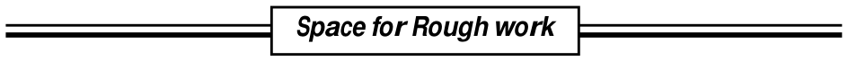
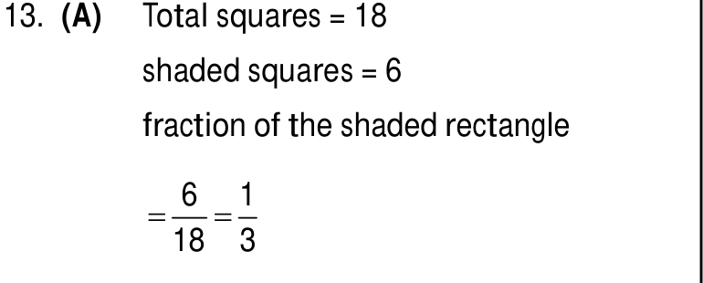
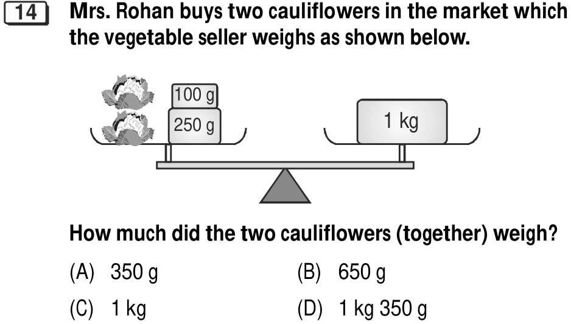
Mrs. Rohan buys two cauliflowers in the market which the vegetable seller weighs as shown below.
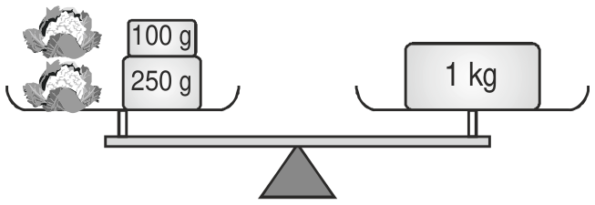
How much did the two cauliflowers (together) weigh?
350 g
650 g
1 kg
1 kg 350 g
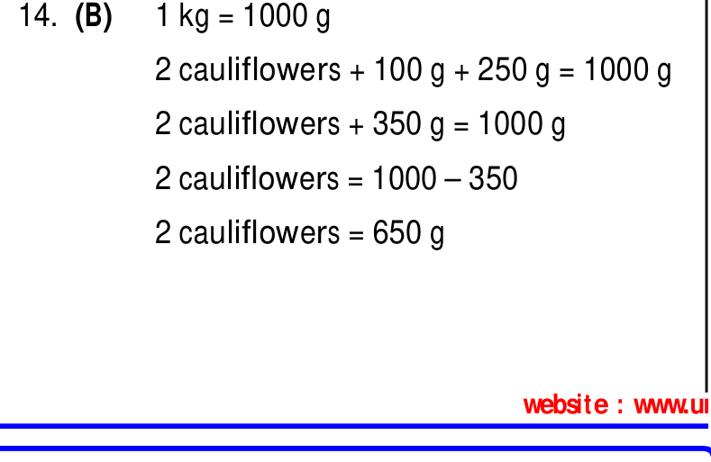
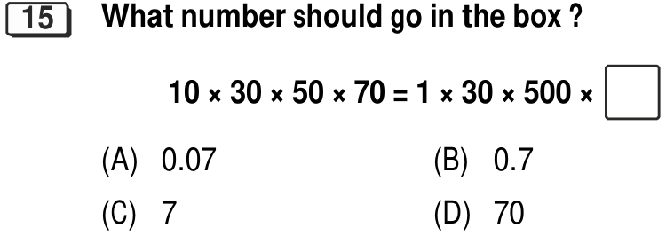
What number should go in the box ?
10 × 30 × 50 × 70 = 1 × 30 × 500 ×
0.07
0.7
7
70
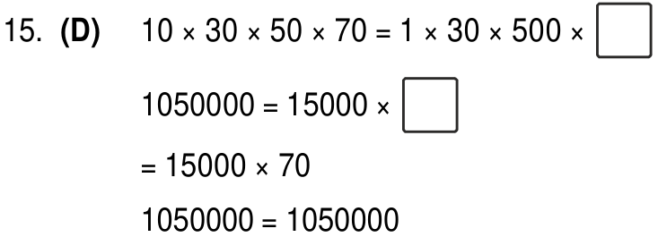
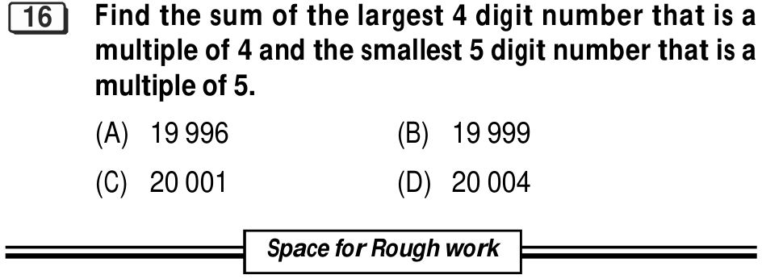
Find the sum of the largest 4 digit number that is a multiple of 4 and the smallest 5 digit number that is a multiple of 5.
19 996
19 999
20 001
20 004
9996 is the largest 4 digit number which is a multiple of 4. [Tip: If the last 2 digits of a number taken together is divisible by 4, the whole number is divisible by 4. (Here 96 is divisible by 4)] 10 000 is the smallest 5 digit number and it is also divisible by 5
(Tip: Numbers ending with 0 and 5 are divisible by 5)
9996 + 10 000 = 19 996
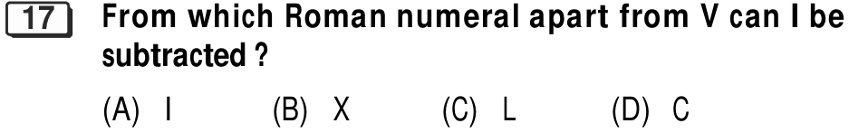
From which Roman numeral apart from V can I be subtracted ?
I
X
L
C
Option (B) X
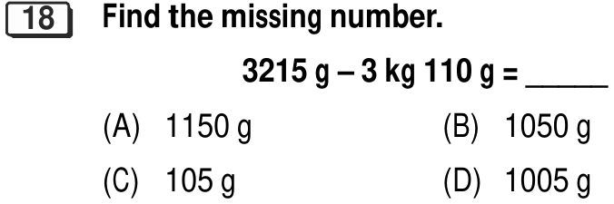
Find the missing number.
3215 g – 3 kg 110 g = _____
1150 g
1050 g
105 g
1005 g
3215 g – 3 kg 110 g
We know 1 kg = 1000 g 3kg = 3000 g
3215 g – 3110 g
= 105 g
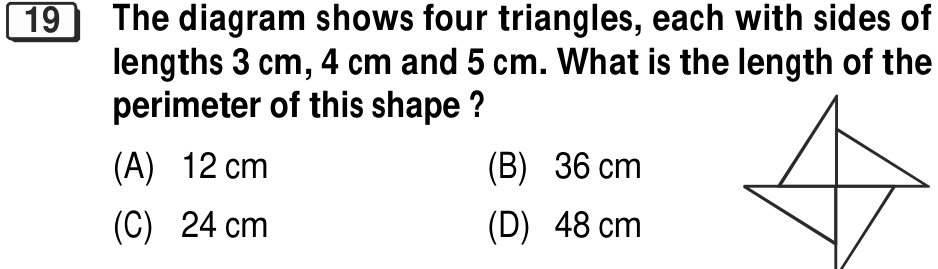
The diagram shows four triangles, each with sides of lengths 3 cm, 4 cm and 5 cm. What is the length of the perimeter of this shape ?
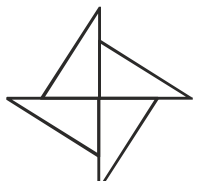
12 cm
36 cm
24 cm
48 cm
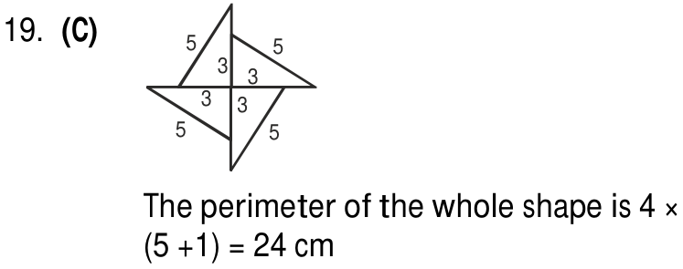
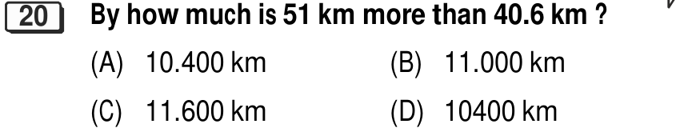
By how much is 51 km more than 40.6 km ?
10.400 km
11.000 km
11.600 km
10400 km
51 km – 40.600 km = 10.400 km
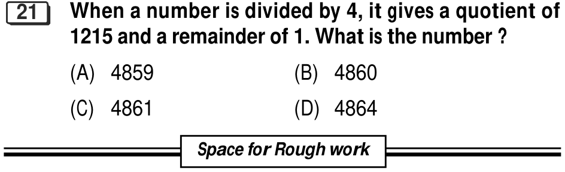
When a number is divided by 4, it gives a quotient of 1215 and a remainder of 1. What is the number ?
4859
4860
4861
4864
1215 × 4 = 4860 4860 + 1 = 4861
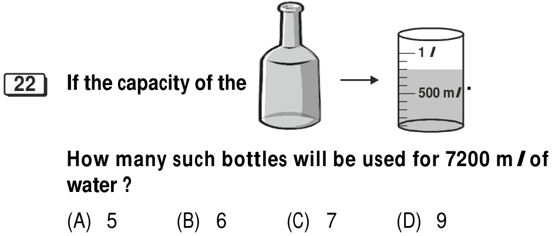
If the capacity of the
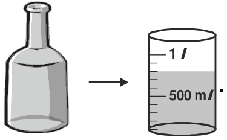
How many such bottles will be used for 7200 ml of water ?
5
6
7
9
Capacity of the bottle = 800 ml No. of bottles of water is used for 7200 ml is 7200 ÷ 800 = 9 bottles
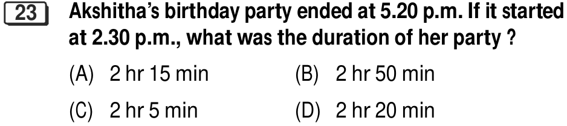
Akshitha’s birthday party ended at 5.20 p.m. If it started at 2.30 p.m., what was the duration of her party ?
2 hr 15 min
2 hr 50 min
2 hr 5 min
2 hr 20 min
2 h + 30 min + 20 min = 2 h 50 min
The duration of her party was 2 h 50 min
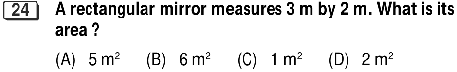
A rectangular mirror measures 3 m by 2 m. What is its area ?
5 m2
6 m2
1 m2
2 m2
3 × 2 = 6 m2
Its area is 6 m2
The number N is a multiple of 4. It lies between 10 and
40. 3 is a factor of N. When 4 is added to N, it becomes a multiple of 7. Find N.
25
26
23
24
Find the sum of 1836 cm3 and 2400 cm3. Express the answer in litres and millilitres.
4 l 236 ml
4 l 336 ml
4 l 362 ml
5 l 636 ml
Find the missing number in the box.
8
6
4
2
Post Office
Church
School
Park
What is the missing number in the box ?
92 595
92 596
92 695
92 659
The figure is made up of 12 identical squares. Find the area of the unshaded parts.
49.5 cm2
48 cm2
49 m
49.5 cm
Each square area = 3 × 3 cm2 = 9 cm2 Area of unshaded part = 5.5 × 9 cm2 = 49.5 cm2
If the length of rope needed to make border X is 16 m, find the length of rope needed for border Y.
16 m
20 m
22 m
24 m
145 s
115 s
175 s
59 s
The table shows the masses of some objects.
Find the objects with the same mass.
P and Q
Q and R
R and S
P and S
P = 3.6 kg = 3600 g
Q = 3.06 kg = 3060 g
R = 3.0600 kg = 3060 g
S = 3 kg 6 g = 3006 g
Hence Q and R have the same mass
Kushi has 170 stamps. Juhi has 37 more stamps than Kushi. Three times the number of stamps Rishi has is 18 less than the number of stamps Juhi has. How many stamps does Rishi have ?
63
69
75
603
Starting with Kushi, calculate the number of stamps the other have
Kushi : 170 stamps
Juhi : 170 + 37 = 207 stamps
Let Rishi’s share of stamps be 1 unit Then, 3 units→ 207 – 18
= 189 stamps
1 unit→ 189 ÷ 3
= 63 stamps
Rishi has 63 stamps
4 glasses of water can fill up 1 jug. How many glasses of water are needed to fill up 8 jugs ?
12
13
32
4
Identify the code for right most image.
DR
RS
RP
DS
Identify the matching pair.
Which letter occurs twice in INFIRMARY, once in HOSPITAL, but not in NURSE ?
R
A
I
N
Which figure comes next in the sequence ?
?
Corner line moves one side clockwise direction. Four circles turn 90° anti- clockwise direction. The innermost circle with in the square is dark and light colour alternatively.
Which option belongs to the given group ?
Small width arrow has one dotted line. Large width arrow has two dotted lines. So, option (B) belongs to the given group.
Identify the odd one out.
Identify the number of rectangles in the given figure.
7
9
8
10
Which option is formed by the given shapes ?
Figure in option (D) is formed by the given shapes.
If blue means green, green means white, white means yellow, yellow means black, black means red and red means brown. Then what is the colour of milk ?
Black
Brown
Yellow
Green
Identify the shape when the second figure is subtracted from the first as shown in the figure below.
Which of the following traffic signs has the largest number of lines of symmetry ?
Option (A) has largest number of symmetry lines.
A pirate has two chests. There are 10 coins in the left chest and the other is empty. Everyday, the pirate will put 1 coin in the left chest and 2 coins in the other one every day. In how many days will the two chests have the same number of coins ?
5
10
8
Never
In 10 days two chests have the same number of coins.
Arrange the following words in a logical sequence.
1. Wrist 2. Elbow 3. Shoulder
4. Palm 5. Finger
2, 4, 3, 5, 1
3, 2, 1, 5, 4
3, 2, 1, 4, 5
5, 4, 1, 3, 2
The names of the parts of the Hand are given which can be arranged in a sequence from top to bottom, e.g. Shoulder, Elbow, Wrist, Palm, and Finger.
“Children must play field games, because _________”.
it is a good pastime.
each evening is meant.
they enjoy play in company with others.
games provide study health to body and skill to mind of the children.
Games provide study health to body and skill to mind of the children.
11
12
8
10